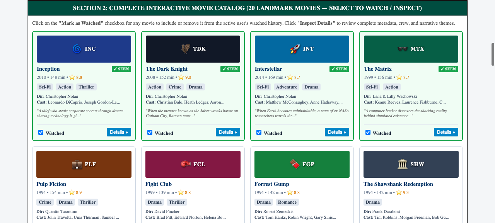
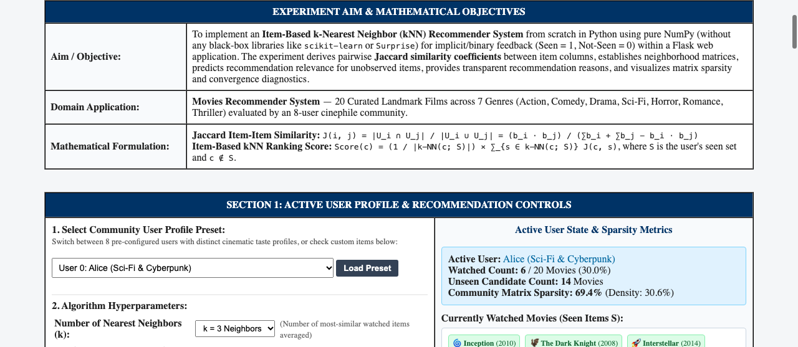
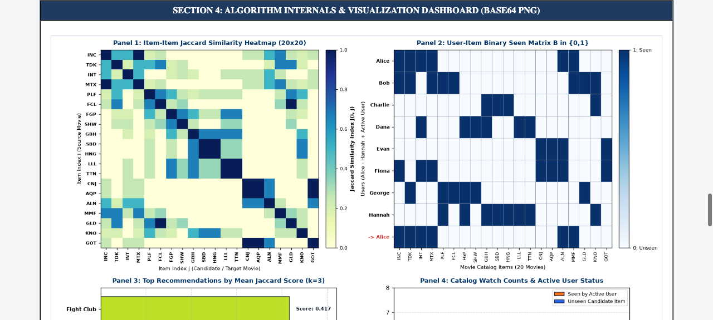
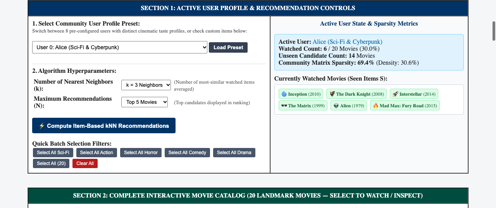

| Experiment No.: | 18 (Practical XVI) | Student Name: | Monis |
| Course / Branch: | B.Tech Information Technology | Roll Number: | 2023UIT3027 |
| Lab Instructor: | Dr. Vishal Maheshkar | Academic Session: | 2026–2027 |
Implementation of Item-Based kNN Recommender System (Binary: Seen or Not Seen) Using Flask
To formulate, derive, and implement an Item-Based k-Nearest Neighbor Recommender System for implicit binary interaction data (Seen vs Not-Seen) from scratch in Python using Flask. The system converts rating matrices into binary consumption vectors, computes pairwise Jaccard Similarity coefficients, and recommends unseen items most similar to the user's viewing history.
Binary Item-Based kNN is designed for implicit feedback environments (such as movie streaming clicks, watchlists, or purchase records) where numerical star ratings do not exist. User behavior is represented simply as 1 (Watched/Seen) or 0 (Not Watched/Unseen). In this setting, movie similarity is measured using set-theoretic overlap metrics such as the Jaccard Similarity Coefficient.
Continuous star ratings are converted into a binary interaction matrix B where 1 indicates that the user watched the movie, and 0 indicates they have not:
For two candidate movies i and j, Jaccard Similarity measures the ratio of the number of users who watched BOTH movies to the number of users who watched EITHER movie:
For an active user u with watched history Su, the recommendation score for an unseen movie j is the sum of its Jaccard similarities to all movies the user has watched:
Provides a comprehensive catalog browser displaying benchmark titles with genre tags, release years, IMDb ratings, and interactive selection triggers.

Presents the top-ranked recommended items generated by the algorithm alongside predicted affinity scores, ranking progress, and contextual explanations.

Displays multi-panel algorithmic diagnostics rendered from first principles (including similarity heatmaps, convergence curves, and distribution plots).

Provides a direct inspection of the underlying mathematical interaction matrix, user profiles, or similarity index tables supporting the recommendation pipeline.

The binary Item-Based kNN recommender proved highly effective for implicit interaction data. By using the Jaccard similarity coefficient over viewing audience sets, the system eliminated the dependency on explicit star ratings. The cumulative set affinity score reliably prioritized unseen titles with high audience co-occurrence, delivering a practical solution for real-world streaming applications.